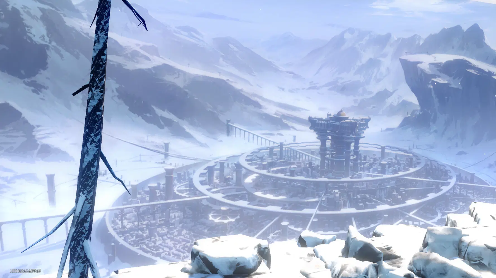

The story begins at Herta Space Station, a research facility established by the enigmatic genius Herta to study and seal anomalous cosmic entities. The station comes under attack by the Antimatter Legion, a faction devoted to destruction. Amidst the chaos, two operatives from the Stellaron Hunters, Kafka and Silver Wolf, infiltrate the station. They retrieve a powerful cosmic entity known as a Stellaron and implant it into a synthetic human vessel created by Silver Wolf. This vessel becomes the Trailblazer, the protagonist of the story. After awakening, the Trailblazer is left with no memories of their past.

The newly awakened Trailblazer encounters March 7th and Dan Heng, members of the Astral Express crew, who assist in navigating the besieged station. Together, they work to repel the Antimatter Legion's forces and stabilize the station's operations. They meet Asta, the station's lead researcher, and Arlan, head of security, who provide crucial support. The team uncovers that the Stellaron's presence is causing spatial distortions, threatening the station's integrity. Their efforts focus on containing these anomalies and restoring order.

With the immediate threat neutralized and the station's stability restored, the Trailblazer learns about the broader implications of the Stellaron and its connection to cosmic anomalies. Recognizing the need to understand their own origins and the Stellaron's nature, the Trailblazer joins the Astral Express crew. Together, they embark on a journey across the galaxy, aiming to uncover the mysteries of the Stellaron and confront the challenges posed by the Antimatter Legion and other cosmic threats.


Herta is the master of Herta Space Station and a member of the Genius Society, also known as Genius Member #83. Known for her cold logic and eccentric personality, she prefers sending puppet versions of herself to handle affairs, appearing in person only when truly necessary. Despite her aloofness, her inventions and research play a crucial role in the fight against cosmic threats.
The head of Herta Space Station’s Security Department, Arlan is a stoic and dutiful young man who takes his responsibilities seriously, despite lacking the strength of a typical warrior. Though often seen with a cold and distant demeanor, his loyalty runs deep — especially toward his fellow staff and his loyal companion, Peppy. Arlan faces danger without hesitation, willingly enduring harm to protect others, showing quiet bravery beneath his reserved exterior.


Asta is the lead astronomer and acting head of Herta Space Station. Bright, energetic, and endlessly curious, she brings warmth and optimism to even the most serious situations. Gifted with a sharp intellect and boundless enthusiasm for scientific discovery, Asta plays a vital role in maintaining the station’s operations. Her leadership is marked by compassion and courage, proving that strength lies not only in power, but also in knowledge and resolve.
Ruan Mei is one of the revered members of the Genius Society, renowned for her brilliance in biological sciences. Elegant, eloquent, and endlessly curious, she views the universe as a grand experiment waiting to be unraveled. Despite her poised demeanor, she possesses a playful charm and a love for beauty in all forms. As a key figure behind the Simulated Universe, Ruan Mei combines scientific mastery with graceful insight—always eager to observe how life evolves through chaos and order alike.